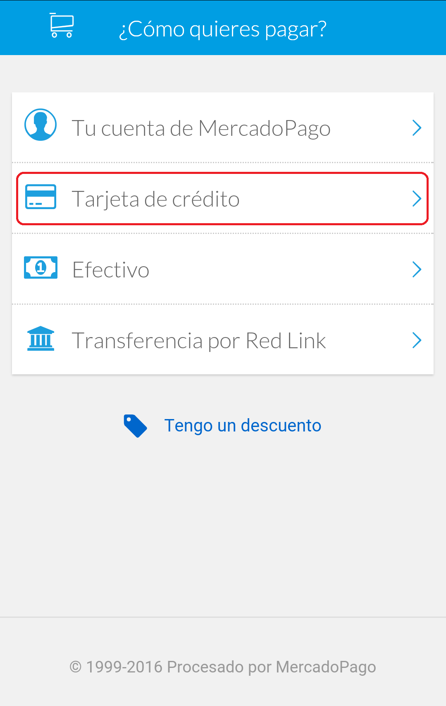
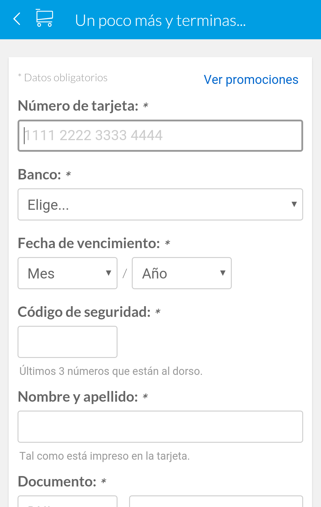
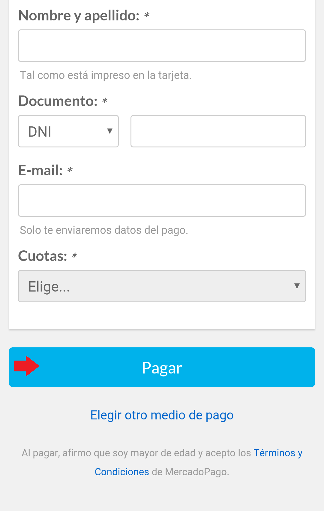

Primer Paso:
Para Confirmar tu cobro Ingresa a Ir a cobrar!

Segundo Paso:
¿Como quieres Pagar?
Seleccionar Tarjeta de Crédito

Tercer Paso :
Primero Ingresar datos de la tarjeta del Cliente
Cuarto Paso :
Luego Ingresar los datos personales del Cliente y seleccionar el botón Pagar

Una vez realizado el pago llegará un email de confirmación del pago